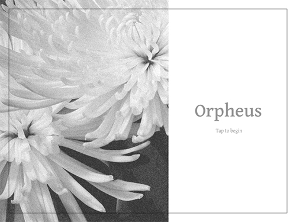
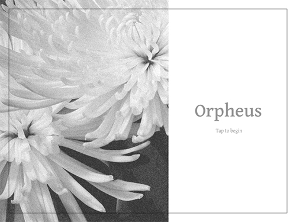

The intersection of death, artificial intelligence, and identity
Death was never the end of an individual's existance. Our identity exists after us in the form of memories, oral histories, and physical records. Nowadays, in an increasingly complicated world, we also leave an immense digital trail.
In the near future, as a way of memorializing dead loved ones, bots are built from our immense digital trail. Preparing the bot is just another step of estate planning. They serve a variety of purposes: to help others with the grieving process, to act as archivists and historians for future generations, or to extend one’s legacy.
In order to explore the frictions that arise through the act of creating an AI "alter ego," I designed an AI service provider and their service touchpoint.
Orpheus is a speculative AI provider. The brand situates itself as secure and respectful. The app walks the customer through the process of setting up their AI. This also prompts a variety of questions. Should AIs be modified to create a perfect self? Who owns the AI and any related data? If an individual’s family stops paying for the service, do they disappear?
<< back
 
